Stian Veum Møllersen / @mollerse
på
#HelloStavanger
Jeg er Stian.
Jeg jobber i Visuelle Historier i NRK.
Tilfeldighetsgjeting, algoritmer, tallknusing, visuelle ablegøyer, og utviklerpotet.
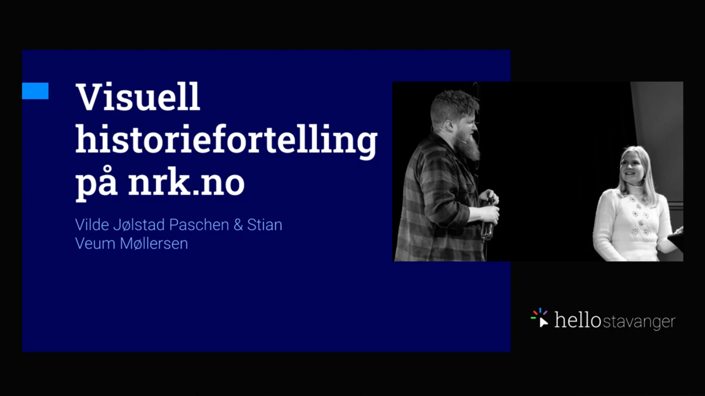
Blandt de mange tingene vi jobber med er store felleshendelser.
Som f.eks. store sportshendelser.
Tidlig på året ble VM definert som «Årets store fellesopplevelse».
Målet er å nå de som følger med på VM fordi Norge faktisk er med denne gangen.
Hvordan engasjere normenn både før og under VM?
Og spesielt de som ikke allerede er alt for opptatt av fotball.
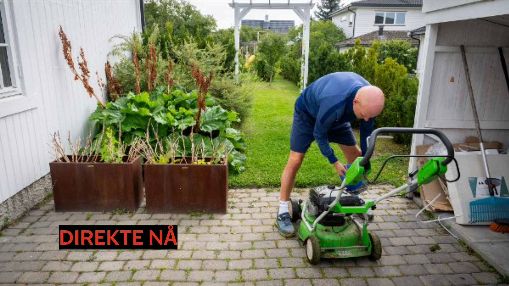
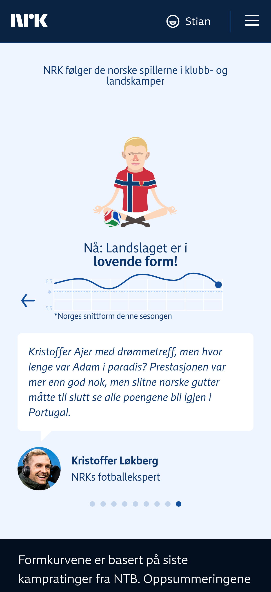
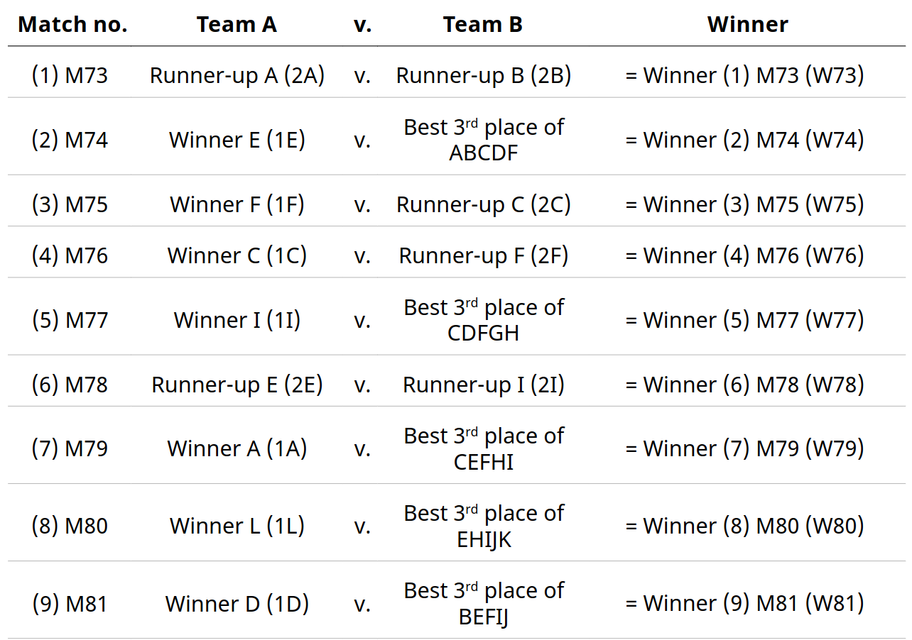
Hvordan skal noen klare å forholde seg til dette?
Plutselig er antall poeng på 3. plass en relevant faktor. Og du må se på alle tredjeplassene, ikke bare din egen gruppe.
Har vi i det hele tatt sjans?
Kan vi ikke bare regne på det?
– Stian
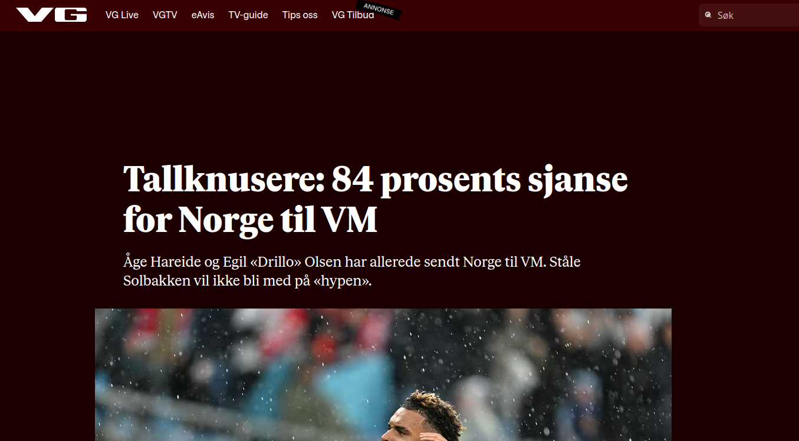
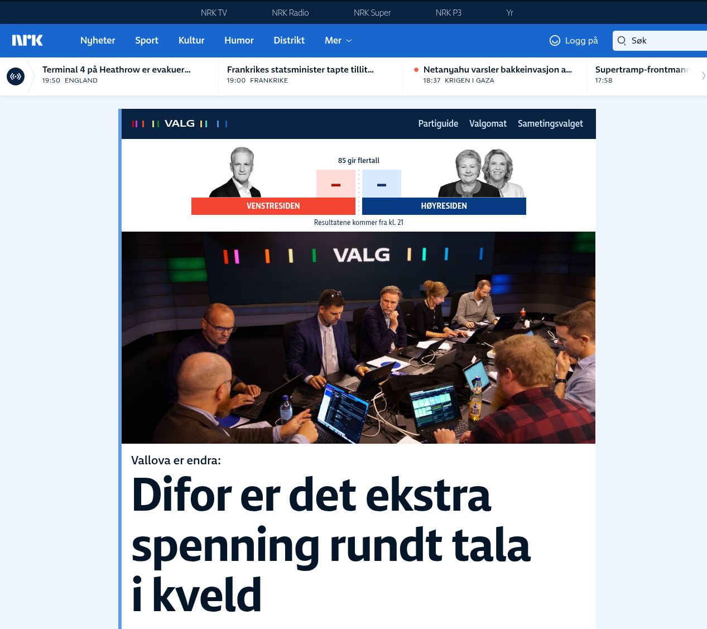
Hvis vi kan modellere en fotballkamp statistisk, kan vi si noe om sannsynligheten for et gitt utfall.
Hvilke modeller finnes for fotballkamper?
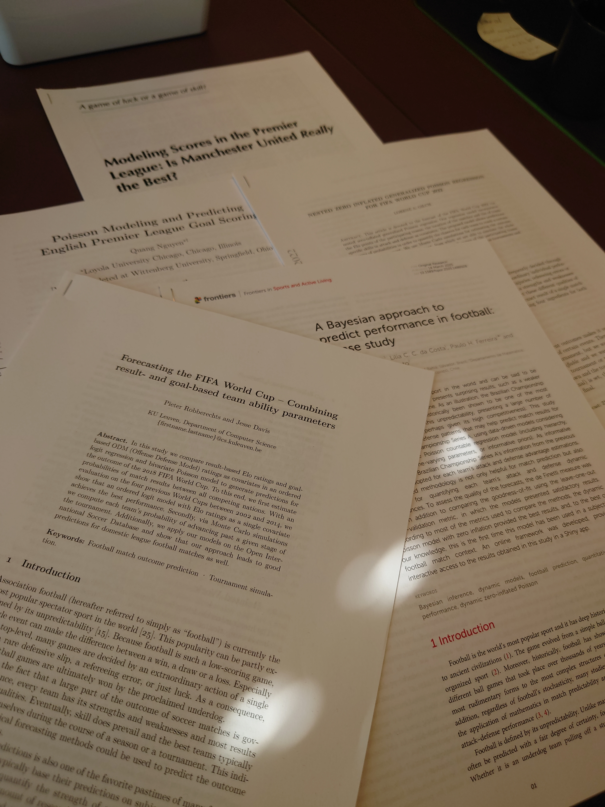
Det finnes overraskende mye vitenskap på statistisk modellering av fotballkamper.
Mulig det har noe med betting å gjøre.
Forskningen spriker i flere ulike retninger.
Er målet med modellen presisjon eller formidling?
Profesjonelle tallknusere.
Kilden til VGs tall.
Har publisert prognoser for tidligere mesterskap.
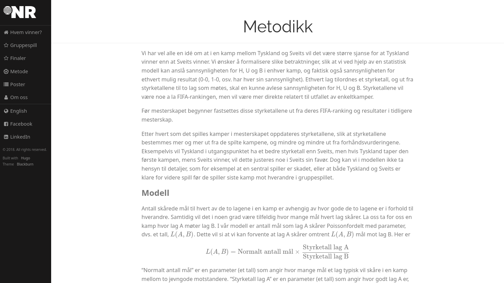
Metoden bruker en enkel statistisk modell for antall mål ett lag scorer mot ett annet lag.
En Poisson-fordelt stokastisk variabel.
En sannsynlighetsfordeling for diskrete hendelser i ett gitt tidsintervall...
hvor gjennomsnittet er en kjent konstant og hendelsene inntreffer uavhengig av tid.
Representerer sannsynlighetsfordelingen til et utfall.
Du kan kombinere flere variabler for å representere et sammensatt utfall.
Kan reifiseres ved å gjøre et trekk fra fordelingen.
En simulering om du vil.
Hvis vi har en variabel for antall mål lag A scorer mot lag B, og en annen variabel for antall mål lag B scorer mot lag A.
Er utfallet av en kamp gitt av to trekk; ett fra hver variabel / fordeling.
Dette kan enkelt utvides til å finne et utfall for mange kamper.
Plutselig har vi muligheten til å simulere et komplett gruppespill, eller en hel turnering.
Ulempen med enkle trekk er at vi ikke vet noe om hvor sannsynlig det bestemte trekket var.
Og enda mer komplisert; hvor sannsynlig kombinasjonen av trekk var.
Løsningen er å kjøre simuleringen mange ganger.
Over tid vil da de mest sannsynlige utfallene opptre flere ganger.
Vi har hoppet litt bukk over parameterne til sannsynlighetsfordelingen.
Hver fordeling har ett parameter (lambda) som bestemmer formen på fordelingen.
Lambda-parameteret er gitt av forholdet mellom de to lagene som møtes og en konstant som sier noe om hvor mange mål som er vanlig i denne typen kamp.
l_a_vs_b = gj_antall_mål * (styrke_A / styrke_B)
Gjennomsnittlig antall mål er ganske enkelt å fastsette.
Sjekk de siste 4-5 VMene og tell antall mål per kamp.
Viser seg at det scores ca 2.5 mål per kamp, som blir ca
1.25 per lag.
Styrketallene for hvert lag kan løses på veldig mange måter.
De kan baseres på eksisterende ranking-systemer (FIFA, ELO), de kan læres fra gamle kamper eller turneringer, eller de kan være satt av eksperter.
Løsningen for oss ble å overlate jobben til våre eksperter.
Tre eksperter gjorde samme øvelse, og resultatet ble snittet mellom dem.
Det er disse valgene som differensierer modellen.
Vi har en statistisk modell for utfallet i en kamp mellom to vilkårlige lag, styrt av parametre som er en miks av redaksjonelle meninger (styrketall) og observert fakta (gj.snitt antall mål).
Når vi setter kamp-modellen inn i turneringsstrukturen for VM i fotball kan vi si mange interessante greier om forskjellige scenarier.
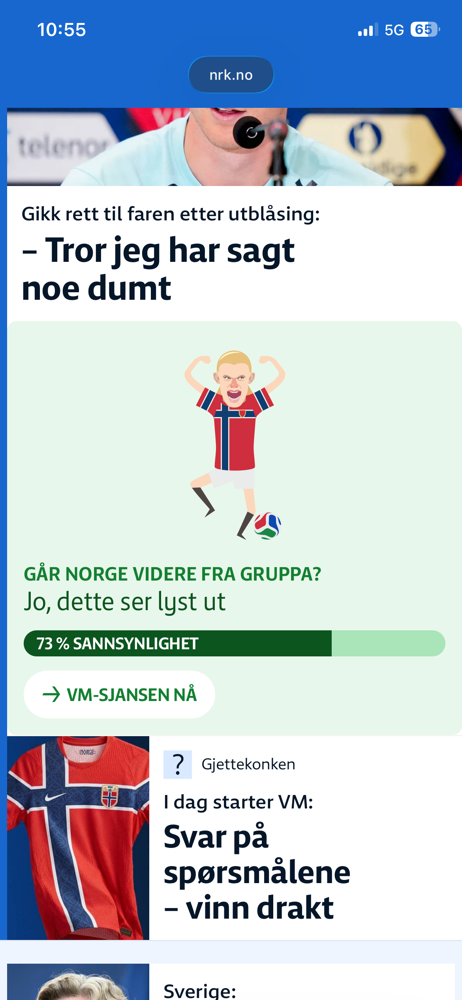
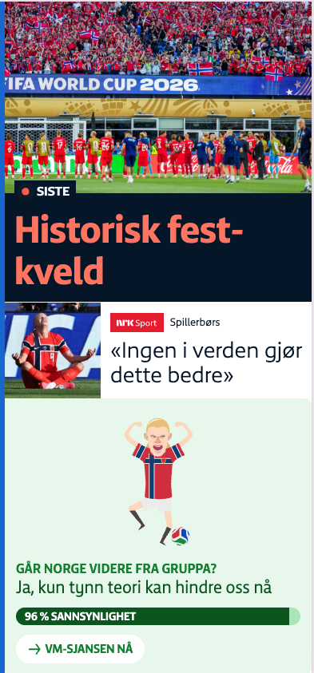
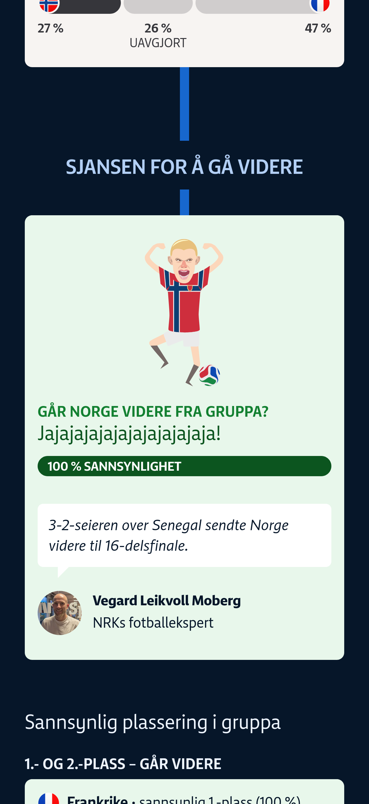
Desto flere kamper som får et fastsatt resultat, desto færre kamper trenger vi å simulere.
Dette gjør at usikkerheten i turneringsmodellen blir mindre og mindre etterhvert som turneringen skrider frem.
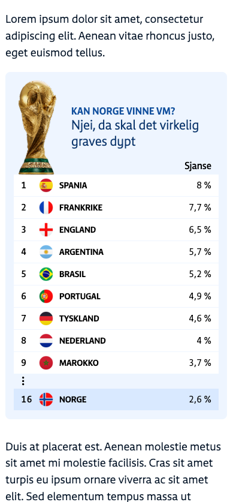
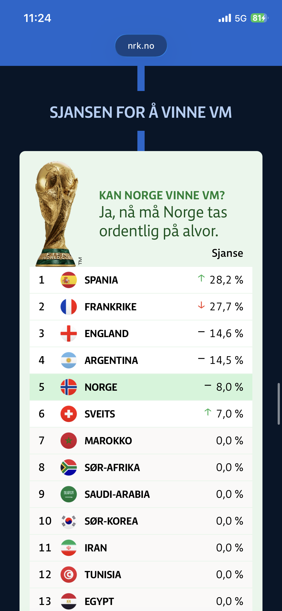
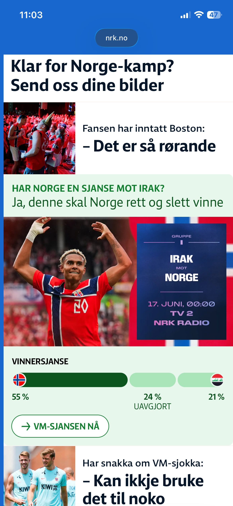
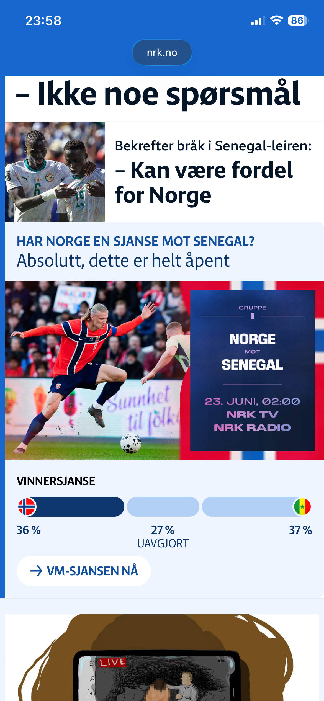
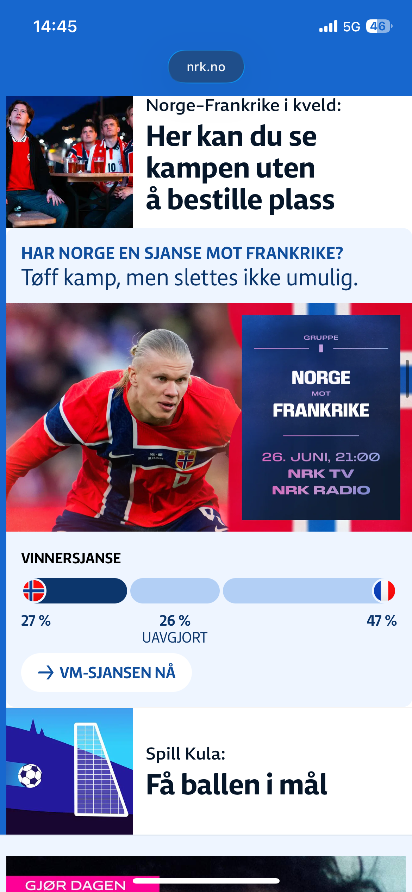
Parameterne er statiske.
De hadde ikke behøvd å være det, men det var det vi gikk for denne gangen.
Det er veldig mange aspekter ved en fotballkamp denne modellen ikke fanger opp.
Til tross for hvor enkel denne modellen er, gir den god informasjon om hvilke ting som kan inntreffe.
F.eks. hvem vi kan møte i de ulike stadiene?
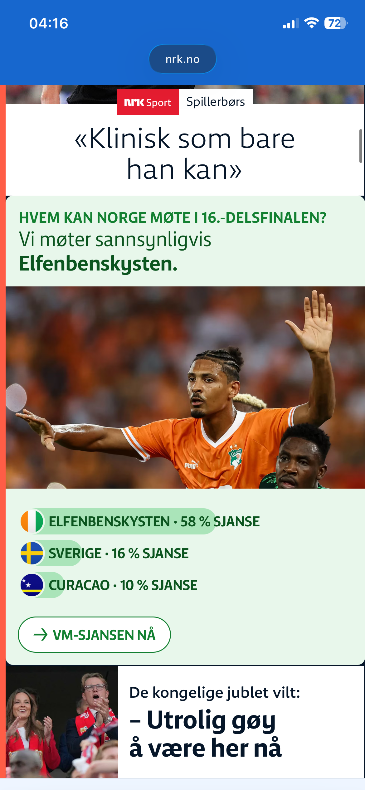
| I forkant av kamp | RO32 | RO16 | RO8 |
|---|---|---|---|
| Norge - Irak | Elfenbenskysten (21.54%), Tyskland (13.07%), Ecuador (8.37%) | Brasil (12.68%), Tyskland (10.07%), Marocco (10.07%) | Mexico (9.28%), England (9.12%), Sør‑Korea (7.31%) |
| Norge - Senegal | Elfenbenskysten (39.66%), Sverige (15.26%), Curaçao (7.04%) | Brasil (18.51%), Tyskland (15.73%), Nederland (12.44%) | England (15.11%), Mexico (13.48%), Marocco (6.13%) |
| Norge - Frankrike | Elfenbenskysten (72.77%), Sverige (26.94%), Paraguay (0.25%) | Brasil (41.20%), Japan (31.83%), Tyskland (16.45%) | Mexico (18.75%), England (18.61%), Ecuador (15.29%) |
Vi var ikke helt forbredt på akkurat hvor mye data vi kunne hente fra turneringsmodellen.
Så fokuset ble på det som handlet om Norges vei gjennom VM.
Likevel var det mye entusiasme i redaksjonen for å ha en modell som dette.
Og det ble flittig brukt i alle flater under VM.
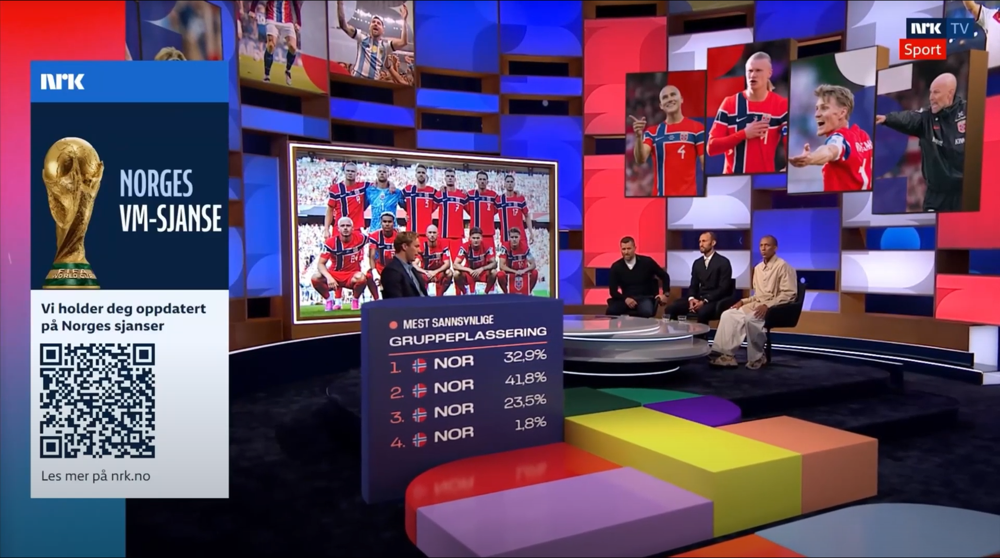
Modellen er ikke lagt i en skuff, bare fordi VM er over.
Vi har laget sjanser for kvartfinale i nasjonsligaen.
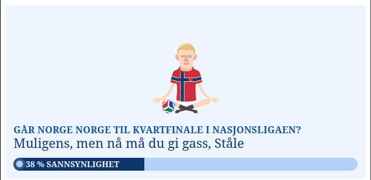
Vi kommer til å bruke modellen på EM kvaliken som starter opp i mars neste år.
Og forhåpentligvis VM for kvinner neste sommer.
Alt med et mål om å gjøre det enda bedre i EM '28!
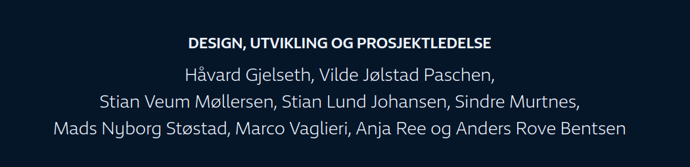
Takk for meg!
Stian Veum Møllersen / @mollerse